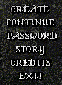

Continue - This will allow you to enter Dark Ages as the character you specify. If you get a message that says "Invalid password", you should check to make sure you are entering it correctly. Dark Ages passwords are not case sensitive, but make sure you are typing it in exactly. Sometimes, if you suddenly stop playing DA due to a disconnect or other trouble, it will say your character is in use, or display "Try again". Wait a couple of minutes and you will be able to login.
Password - This will allow you to change your password. Be sure not to forget it! Don't pick something obvious, or a simple password - try to mix upper and lowercase letters, as well as numbers. And never, never give your password out to ANYONE - even people you trust. Nexon will never ask you for it. Don't become a victim.
Story - Interested in the legend and story of Dark Ages? This option will allow you to read the story behind Dark Ages. I suggest that you try to read it at least once.
Credits - This will display the people involved behind the scenes, making Dark Ages possible.
Exit - This will exit the client.